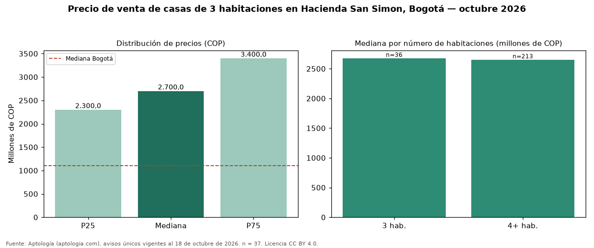

Precio de venta de casas de 3 habitaciones en Hacienda San Simon, Bogotá — octubre 2026
Con 37 avisos únicos analizados, el precio mediano de casas de 3 habitaciones en venta en Hacienda San Simon, Bogotá es COP 2,70 mil millones. Eso la ubica 145 % por encima de la mediana de Bogotá para casas de 3 habitaciones (COP 1,10 mil millones). El área mediana anunciada es 448 m² (en Bogotá: 200 m²). Por metro cuadrado, la mediana es COP 5.876.667/m² (+8 % frente a COP 5.444.444/m² en Bogotá). En el mismo barrio, la mediana de casas es COP 2,65 mil millones con 4 o más habitaciones. 100 % de los avisos incluye al menos un parqueadero. El estrato más frecuente en los avisos es 6. Datos abiertos CC BY 4.0 de Aptología; fuente y búsqueda de inmuebles: https://www.aptologia.com/casas-en-venta/bogota/hacienda-san-simon. Archivos: PDF de 2 páginas, CSV con las cifras y gráfica PNG.

| Avisos únicos | 37 |
|---|---|
| Percentil 25 | COP 2.300.000.000 |
| Mediana | COP 2.700.000.000 |
| Percentil 75 | COP 3.400.000.000 |
| Mediana por m² | COP 5.876.666 |
Fuente: avisos vigentes de portales inmobiliarios recopilados por Aptología, deduplicados (mínimo 30 avisos únicos por celda). Precios pedidos, no cerrados. Fecha: 2026-10-18.